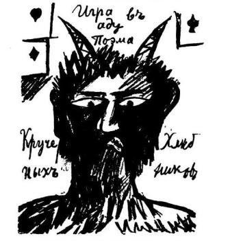

Возникновение
Автор слова и основоположник направления — итальянский поэт Филиппо Маринетти (поэма «Красный сахар»). Само название подразумевает культ будущего и дискриминацию прошлого вместе с настоящим. 20 февраля 1909 года в газете «Фигаро» Маринетти опубликовал «Манифест футуризма». Он был написан для молодых итальянских художников. Маринетти писал: «Самые старые среди нас — тридцатилетние, за 10 лет мы должны выполнить свою задачу, пока не придёт новое поколение и не выбросит нас в корзину для мусора…» В манифесте Маринетти провозглашается «телеграфный стиль».
Помимо Маринетти, основоположниками футуризма были Балла, Боччони, Руссоло, Карло Карра, Джино Северини, Франческо Балилла Прателла. В 1912 году в Париже состоялась первая выставка художников-футуристов.
Для футуризма характерны отказ от традиционной грамматики, право поэта на свою орфографию, словотворчество, скорость, ритм. Свои картины они посвящали поезду, автомобилю, самолётам. Словом, всем сиюминутным достижениям цивилизации, упоённой техническим прогрессом. Мотоцикл был объявлен более совершенным творением, нежели скульптуры Микеланджело. Маринетти говорил: «Жар, исходящий от куска дерева или железа, нас волнует больше, чем улыбка и слёзы женщины», «Новое искусство может быть только насилием, жестокостью».
Провозглашается пафос разрушения и взрыва. Воспеваются войны и революции как омолаживающая сила одряхлевшего мира. Можно рассматривать футуризм как своеобразный сплав ницшеанства и «Манифеста Коммунистической партии». Динамика движения должна прийти на смену статике позирующих скульптур, картин и портретов. Фотоаппарат и кинокамера заменят несовершенство живописи и глаза.
Русский футуризм
В России первыми футуристами стали художники братья Бурлюки. Давид Бурлюк — основатель в своём имении колонии футуристов «Гилея». Ему удаётся сплотить вокруг себя самые разные, яркие, ни на кого не похожие индивидуальности. Маяковский, Хлебников, Кручёных, Бенедикт Лившиц, Елена Гуро — наиболее известные имена. В первом манифесте «Пощёчина общественному вкусу» призыв: «Бросить Пушкина, Достоевского, Толстого и проч. с парохода современности». Но призыв этот смягчён высказыванием ниже: «Кто не забудет первой любви, тот не узнает любви последней». Но даже такие кумиры, как Александр Блок, не избежали обвинения в том, что «им нужна лишь дача на реке». Так или иначе, но футуризм подарил поэзии трёх гениев: Маяковского, Хлебникова, Пастернака. Не говоря уже о море талантов: Хабиас, Каменский, Шкловский, Зданевич, Кручёных.
Судьба многих футуристов трагична. Одни расстреляны, как Терентьев, другие сгинули в ссылке, как Хабиас. Выживших обрекли на забвение: Каменский, Кручёных, Гуро, Шершеневич. Только Кирсанову, Мартынову, Асееву, Шкловскому удалось, несмотря на опалу, сохранить статус признанных писателей и дожить до преклонных лет в полном расцвете творческих сил. Пастернак был затравлен при Хрущёве, хотя к тому времени полностью отошёл от принципов футуризма.
Футуризм — одно из течений авангардизма, породившего множество иных направлений и школ. Имажинизм Есенина и Мариенгофа. Конструктивизм Сельвинского, Луговского. Эго-футуризм Северянина. Будетлянство Хлебникова. ОБЭРИУ Хармса, Введенского, Заболоцкого, Олейникова. И, наконец, «ничевоков». К неофутуристам критика причисляет метаметафористов А. Парщикова и К. Кедрова, а также Г. Айги, В. Соснору, А. Горнона, С. Бирюкова, Е. Кацюбу, А. Альчук, Н. Искренко. В изобразительном искусстве следует отметить кубофутуризм — направление, в котором в разное время работали такие художники, как Малевич, Бурлюк, Гончарова, Розанова, Попова, Удальцова, Экстер, Богомазов и др.
Неофутурзм
Неофутуризм — постмодернистическое движение в искусстве, дизайне и архитектуре конца XX — начала XXI века, связанный с идеалистической верой в лучшее будущее, в гармонию человека, природы и высоких технологий. Направление появилось и развивалось, начиная с ранних 60-х — конца 70-х годов, благодаря идейному лидеру Холу Фостеру; американскому архитектору Бакминстеру Фуллеру; финно-американскому архитектору и промышленному дизайнеру Ээро Сааринену; английской архитектурной группе «Аркигрэм», датскому архитектору Хенингу Ларсену; чешскому архитектору Яну Каплицкому; шведскому художнику Симону Сталенхагу, итальянскому световому скульптору Марко Ладоле; американскому концептуальному художнику Сиду Мид, американскому театральному сценаристу Грегу Аллену и русскому поэту Андрею Вознесенскому.
Неофутуризм возобновил своё существование в 2007 году после публикации «Манифеста Неофутуристического Города», написанного дизайнером Вито Ди Бари (бывшим исполнительным директором ЮНЕСКО) для того, чтобы обрисовать футуристическое видение города Милана во время Всемирной выставки в Милане 2015 года.
Эгофутуризм
В 1909 г. вокруг Игоря Северянина сложился кружок петербургских поэтов, в 1911 г. принявший название «Ego», и в том же году И. Северянин самостоятельно издал и разослал по конторам газет небольшую брошюру под названием «Пролог (Эгофутуризм)». Помимо Северянина в группу вошли поэты Константин Олимпов, Георгий Иванов, Петр Ларионов, Стефан Петров (Грааль-Арельский), Павел Кокорин, Павел Широков, Иван Лукаш и другие. Все вместе они основывают общество эгофутуристов, издают несколько листовок и манифестов, сформулированных в крайне абстрактных и эзотерических выражениях (например, «Призма стиля — реставрация спектра мысли»); предтечами эгофутуристов были объявлены такие поэты «старой школы», как Мирра Лохвицкая и отец Олимпова Константин Фофанов. Свои стихотворения участники группы называли «поэзы». Первый коллектив эгофутуристов вскоре распадается. Осенью 1912 года Игорь Северянин отделился от группы, быстро набирая популярность среди русских писателей-символистов и затем широкой публики.
Организацию и пропагандирование эгофутуризма взял на себя 20-летний поэт Иван Игнатьев, основавший «Интуитивную Ассоциацию». Игнатьев деятельно взялся за дело: писал рецензии, стихи, теорию эгофутуризма. Кроме того в 1912 году он основал первое эгофутуристическое издательство «Петербургский глашатай», которое издало первые книги Рюрика Ивнева, Вадима Шершеневича, Василиска Гнедова, Грааль-Арельского и самого Игнатьева. Эгофутуристы печатались также в газетах «Дачница» и «Нижегородец». Идеологом движения был художник и поэт Л. В. Зак, публиковавшийся под псевдонимом Хрисанф.[1] В первые годы эгофутуризм противопоставлялся кубофутуризму (будетлянтству) по региональному (Петербург и Москва) и стилистическому признаку. В 1914 году состоялось первое общее выступление эгофутуристов и будетлян в Крыму; в начале этого года Северянин кратковременно выступает с кубофутуристами («Первый журнал русских футуристов»), но затем решительно отмежёвывается от них. После самоубийства Игнатьева «Петербургский глашатай» прекращает своё существование. Основными эгофутуристическими издательствами становятся московский «Мезонин поэзии» Вадима Шершеневича и петроградский «Очарованный странник» Виктора Ховина.
Эгофутуризм был явлением кратковременным и неровным. Бо́льшая часть внимания критики и публики была перенесена на Игоря Северянина, который достаточно рано отстранился от коллективной политики эгофутуристов, а после революции и полностью изменил стиль своей поэзии. Большинство эгофутуристов либо быстро изживали стиль и переходили в другие жанры, либо вскорости совершенно оставляли литературу. Имажинизм 1920-х гг. во многом был подготовлен поэтами-эгофутуристами.
По мнению исследователя русского авангарда Андрея Крусанова попытку продолжить традиции эгофутуризма предприняли в начале 1920-х гг. участники петроградских литературных групп «Аббатство гаеров» и «Кольцо поэтов им. К. М. Фофанова». Если «Аббатство гаеров» было просто кружком, объединившим молодых поэтов Константина Вагинова, братьев Владимира и Бориса Смиренских, К. Маньковского и К. Олимпова, и о его деятельности мало что известно, то созданное в 1921 г. «Кольцо поэтов» (В. и Б. Смиренские, К. Вагинов, К. Олимпов, Грааль-Арельский, Д. Дорин, Александр Измайлов) пыталось организовывать громкие выступления, анонсировало широкую издательскую программу, но было закрыто по распоряжению петроградского ЧК 25 сентября 1922 г.
Игорь Северянин эмигрировал после революции в Эстонию, многие оставшиеся в России эгофутуристы были репрессированы (Василиск Гнедов, Константин Олимпов, Грааль-Арельский и др.).